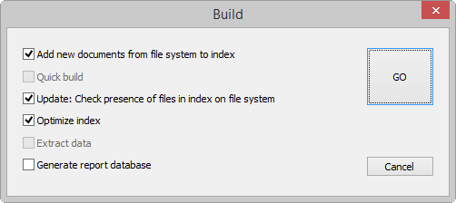

An index is created. The (electronic, scanned and/or imported) documents are stored in the data folders.
Refer to the ZySCAN manual for information on scanning documents and adding them to an index, and to the relevant Review Guides for information about adding data folders to an index.
To stop indexing, click the stop button: .
Stop: Abort indexing and discard the temporary index file.
Merge: Combine the temporary index file with the current index, without processing any more files. The current file is still indexed.
Continue: Complete indexing.
The index is built. You can now search for information using ZyFIND, ZySEARCH or the ZyLAB Web Client.
To build a new index
To add all new documents
To update existing documents
The Add option uses the date to check if documents are new or updated. All documents are checked.
Use Quick Build to quickly index documents that are marked new, changed or deleted. All other documents are skipped.
Marked documents are known to ZyINDEX, even before indexing starts, because they have an entry in the database. These references to the documents are created when they are exported to the index data directories with ZySCAN or when they are imported to the index data folder with the ZyINDEX import directory. Since only marked documents are indexed and all other documents are skipped, the indexing process is accelerated.
You can only use Quick Build if a link to the index is present. Also, check if 'Quick build enabled'' is selected (ZyINDEX > Index Settings > Settings).
To index moved source documents
To delete selected documents from the index
To optimize index storage space and search speed. Use this option to maintain the index after large changes.
To extract document properties, file system, concept, language and/or field information from documents while indexing.
Save timeIf building indexes is taking too much time reduce the number of Update and Optimize actions. If existing index documents are not changed or deleted and only new documents are added to your index then doing a frequent Add action will be sufficient to update the index. Indexing large unknown data setsIf you are indexing large unknown data sets (for example a hard drive of a confiscated PC), raise the number of recognizable file extensions via ZyINDEX > Options > Global Settings > Index wizard. For more information, see Power User Manual > Advanced Indexing > Indexing recovery/problem files. View Log File
|
ZyINDEX reads designated sets of text files and records the following information about every content word within each file:
name of each file in which a given word appears
location of each word, relative to other words in the file
The index stores names and dates of graphics-only files in these formats: TIFF, PCX and BMP, so that you can make file name and date searches. During processing ZyINDEX ignores bitmapped graphic objects embedded in a text file.
When ZyINDEX encounters a new content word, it adds the word to a set of files called the dictionary. The location files store information about content word position. The term index refers to a directory holding dictionary, location and other files which were made while creating an index.
Buffer overruns can be caused by long (>256) folder/file paths.